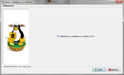
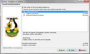
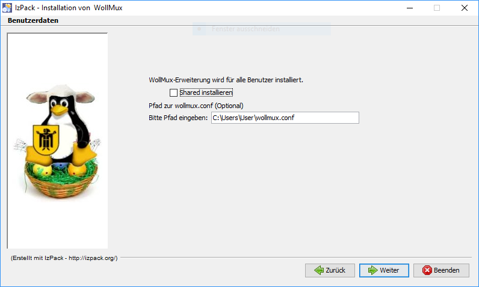
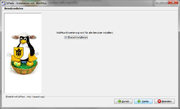
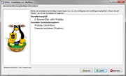
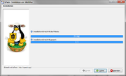
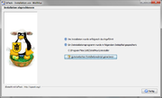
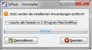

WollMux installieren
Allgemeines
Ab der Version 16.04 des WollMux wird ein platformunabhägiger Java-Installer (izPack) mitgeliefert, welcher die empfohlene Installationsvariante ist. Allgemeine Information zur Verwendung von izPack-Installern finden sich hier.
Voraussetzungen
Bevor sie den WollMux installieren können, müssen auf ihrem System folgende Programme vorhanden sein:
Java Installer
Die Installation kann mit einem Doppelklick auf die Jar-Datei oder manuell gestartet werden:
java -jar wollmux-16.04-installer.jar
Folgender Aufruf ermöglicht eine zusätzliche Debugausgabe des Installers:
java -DDEBUG=true -jar wollmux-16.04-installer.jar
Installationsverlauf
- Sprachauswahl (Abbildung 1)

- Willkommensdialog (Abbildung 2)

- Zielverzeichnis (Abbildung 3)
- Unter Windows wird der Installationspfad C:\Program Files bzw. C:\Program Files (x86) vorgegeben.
- Unter Linux wird das Benutzerverzeichnis vorgeschlagen.

- Komponenten (Abbildung 4)
- Im Dialog “Auswahl Installationspakete” kann die Installation der WollMux.oxt deaktiviert werden.
- Die Extension liegt im Installationsverzeichnis und kann jederzeit über den Extension-Manager manuell nachinstalliert werden.

- Registry Eintrag (Abbildung 5)
- Hier wird ein Registry Eintrag (HKEY_LOCAL_MACHINE//Software/WollMux bzw. HKEY_LOCAL_MACHINE//Software/WOW6432Node/WollMux für 32-Bit Java) angelegt, der den Pfad zur WollMux Konfiguration hat (siehe. Konfigurationsdatei wollmux.conf

- Systemweite Installation (Abbildung 6)
- WollMux.oxt kann für alle Benutzer (“shared”) installiert werden.
- Standardmäßig ist die Option nicht aktiv.
- Für eine Shared-Installation unter Linux muss der Installer als sudo aufgerufen werden.
- Unter Windows verlangt der Installer automatisch Admin-Rechte.

- Zusammenfassung (Abbildung 7)

- Installation (Abbildung 8)

- Desktop-Icons und Startmenü (Abbildung 9)
- Desktop-Verknüpfungen können nur unter Windows angelegt werden.
- Standardmäßig werden keine Desktop-Verknüpfungen erstellt

- Abschluß (Abbildung 10)
- Die Datei auto-install.xml kann über den Button “Automatisches Installationsskript generieren” erstellt werden. Dabei werden alle getroffenen Einstellungen gespeichert.

Unbeaufsichtigte Installation
Die Installation kann auch über die Konsole ohne GUI ausgeführt werden (Unattended Installation).\ Folgende Szenarien sind denkbar:
- Aufruf des Installers mit Standardeinstellungen und zusätzlicher Debugausgabe
java -DDEBUG=true -jar wollmux-16.04-installer.jar -options-system
- Aufruf des Installers mit Standardeinstellungen für eine systemweite Installation
java -Dlocal=false -jar wollmux-16.04-installer.jar -options-system
- Aufruf des Installers mit Standardeinstellungen für eine systemweite Installation mit Vorgabe des Zielordners
java "-DINSTALL_PATH=C:\Program Files (x86)\WollMux" "-Dlocal=false" -jar wollmux-16.04-installer.jar -options-system
Sobald eine Änderung an den Standardeinstellungen benötigt wird, muss man einmalig die Installation manuell mit GUI durchführen und (wie in Abbildung 9 beschrieben) ein Installationsskript erstellen.
Dieses Installationsskript kann nun für alle weiteren Installationen verwendet werden:
java -jar wollmux-16.04-installer.jar auto-install.xml
Uninstaller

Der Java-Uninstaller liegt im WollMux-Installationsverzeichnis unter dem Ordner “Uninstaller”, welcher die Deinstallation mit eigener GUI erleichtert (Abbildung 10).
- Der Uninstaller kann ebenfalls Unattended ausgeführt werden:
java -jar "\Uninstaller\uninstaller.jar“ -c -f
Der erste Start

Nach erfolgreicher Installation der WollMux-Extension (LibreOffice/OpenOffice), wird beim Start des Writers auf die fehlende Datei “wollmux.conf” hingewiesen (Abbildung 11).
Das bedeutet, dass der WollMux ohne zentraler Vorlagensammlung arbeitet.\ Folgende Feature sind nutzbar:
Um die WollMuxBar und eine zentrale Vorlagensammlung nutzen zu können, wird eine WollMux-Konfiguration benötigt (siehe Standardkonfiguration des WollMux installieren und pflegen).